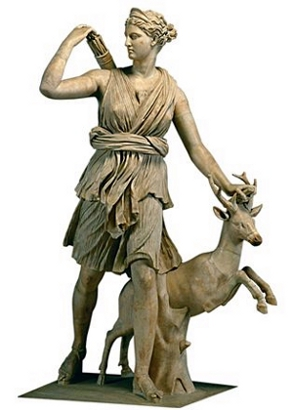

Afrodit, sevginin ve aşkın değerini bilmeyenlere karşı ne kadar acımasızca aşka inananlara karşı da o kadar cömertti ve kendisine yapılan bir iyiliği ya da adağı asla karşılıksız bırakmazdı. Bunu en iyi şekilde Afrodit’nin Theseus’un Girit yolculuğunda yaptığı rehberlik sırasında görmekteyiz.
Atina kralı olan ve Ege Denizi’ne adını veren Aigeus ile Aithra’nın oğlu olan Theseus, Atina kralının oğlu olduğunu bilmiyordu. Zira Aigeus kılıcı ve sandalını bir kayanın altına saklamıştı ve Theseus’un bu kayayı kaldıracak güce erişmeden babasının kral olduğunu öğrenmesini istememişti.
Günlerden bir gün Herakles, Piettheus’un sarayına gelip sırtında taşıdığı aslan postunu yere atınca korkudan herkes kaçtı; sadece Theseus, kılıcını çekerek aslanın üstüne yürüdü. Theseus on altı yaşına geldiğinde artık babasının söylediği kayayı kaldırabilecek güce gelmişti. Annesi onu kayanın yanına götürünce Theseus, kayayı kaldırıp babasının sakladığı kılıç ve sandalları çıkarttı. Bundan sonra da annesi ona, babasının Atina kralı olduğunu kendisinin de kral çocuğu olduğunu söyledi. Bunun üzerine Atina’ya yola çıkan Theseus, kendisine yapılan tavsiyelere uymayarak deniz yolu yerine kara yoluyla gitmeyi tercih etti. Oysa kara yolunda türlü çeşit canavarlar ve yırtıcı hayvanlar vardı. Buna karşın deniz yolu daha güvenli idi. Ne var ki Theseus, bir kral olduğunu gösterme gayretkeşliği içinde olduğundan tehlikeli yolu seçti. Yol boyunca binler yırtıcı hayvan ve canavarlarla boğuşup öldürerek sonunda Atina’ya vardı ve kral babasının karşısına çıktı. Ne var ki, babasına, kendisinin oğlu olduğunu hemen söylemedi. O sıralarda kral Aigeus, büyücü Medeia’nın kehanetlerine büyük değer veriyordu. Medeia, Theseus’un tahta davası güdeceğini sezdi ve onu zehirleyerek öldürme kararı aldı. Ancak Theseus, şölen sofrasına oturduğunda et kesmek için babası Aigeus’un kılıcını çıkarınca, babası onu tanıdı. Bunun üzerine az kalsın oğlunun canına kıyacak olan Aigeus, büyücü Medeia’yı kovarak oğluna sarıldı.
Kral Aigeus’un kardeşi Pallas’ın elli oğlu, Theseus’tan hiç hoşlanmadılar. Dahası tahtın varisi olması nedeniyle ona düşman oldular. Bu oğlanlar Theseus’a pusu kurarak onu ortadan kaldırmak istediler. Fakat Theseus, pusuyu fark ederek hepsini öldürdü. Bu yüzden de kral tarafından cezalandırılarak bir yıl boyunca Atina’nın dışına sürüldü.
O sıralar Girit kralı Minos, oğlu Androgeus’un öldürülmesine karşılık, her dokuz yılda bir Atinalılardan yedi erkek ve yedi bakire kızdan oluşan bir vergi alıyordu. Bu kurbanlar Girit’e getirildiğinde, insan bedenli boğa başlı Minotaur’a yem ediliyordu. Ancak Theseus, Girit canavarına yem edilen çocukların ailelerine acıyarak Girit’e gidip Minos’la anlaşmaya çalıştı. Buna göre eğer Theseus çıplak elle savaşarak Minotaur’u öldürürse, kurbanlar özgür bırakılacaktı. O güne kadar kurbanlar siyah yelkenli bir gemi ile Girit’e götürülüyordu. Fakat bu kez kral Aigeus, Theseus’a biri beyaz diğeri siyah olan iki adet yelken verdi. Theseus; bu yelkenlerden siyah olanını giderken beyaz olanını da müjdeli haberin işareti olarak gelirken takacaktı.
Kurbanlar seçildikten sonra Theseus, yola çıkmadan önce Apollon tapınağına giderek beyaz yüne sarılı kutsal zeytin dalı adadı. Theseus, Minotaur’u yenmek için şöyle bir plan hazırladı; kurban edilecek kızlardan ikisinin yerine iki erkek savaşçı koyarak, onları kadın kılığına soktu. Delphoi kahini yolculuğun başarıya ulaşması için aşk ve güzellik tanrıçası Afrodit’nin, Theseus’un gemisine rehberlik yapması gerektiğini söyledi. Bunun üzerine Theseus, Afrodit’ye yalvararak geminin halatına dişi keçi kurban etti. Bu keçi kurban edilirken, keskin naralar attı ve bu naraların etkisiyle birden cinsiyet değiştirerek erkek keçi haline geldi.
Birkaç günlük yorucu ve fırtınalı bir yolculuktan sonra, Theseus’un gemisi Girit’e geldi. Yol boyunca güzellik ve aşk tanrıçası Afrodit, Theseus’tan yardımı bir an bile esirgemedi. Hatta öyle ki, Girit’e götürülen kurbanlık bakirelerden Periboia ile Phreboia adlı güzeller güzeli iki kızın Theseus’a aşık olmasını sağladı. Periboia ile Phreboia, güzellikte o kadar sınır tanımazlarda ki, Kral Minos kendisine getirilen tutsakları saymak için limanı gittiğinde bu bakirelere aşık olmuştu. Afrodit’nin Theseus’a yaptığı iyilik, bununla da sınırlı kalmadı; daha da önemlisi Girit kralı Minos’un kızı Ariadne’yi Theseus’a aşık etti. Genç ve yiğit prensi görünce adeta kendinden geçen prenses Ariadne, aşkına karşılık vermesi halinde Theseus’a yardım edeceğine dair söz verdi. Bunun üzerine Theseus, prensese aşk ilan ederek evlilik sözü verdi. Ariadne aynı zamanda canavar Minotaur’un kız kardeşi idi. Buna rağmen Theseus’u onun nasıl öldüreceğinin sırlarını vermekte tereddüt etmedi. Minotaur’la vuruştuktan sonra Theseus’un tekrar yeryüzüne dönmesi için bir labirentten geçmesi gerekiyordu. Ve bu labirentin yolunu da sadece Ariadne biliyordu. Ariadne sevgilisine labirentten kurtulmanın yolunu ve Minotaur’u ancak saçlarından yakalayarak öldürebileceğini söyledikten sonra onu Deniz Tanrısı Poseidon’a adamasını sıkı sıkı tembih etti. Ariadne’nin verdiği bu sırlar yardımı ile Theseus, Minotaur’u öldürerek labirentten çıkmayı başardı. Theseus, Minotaur’u öldürürken kadın kılığına soktuğu iki savaşçı da kurban bakireleri kurtarmıştı. Sonra gemi Girit limanından hareket ederek Atina’ya doğru yola çıktı. Ne var ki, Theseus, giderken Ariadne’yi yanına almamıştı. Sevgilisi tarafından nankörce terk edildiğini düşünen Ariadne üvey kardeşinin ölümüne yol açmanın verdiği vicdan azabıyla günlerce ağladı ve Theseus’a lanetler yağdırdı.
Ariadne’nin ne kadar acı çektiğini gören Zeus ve Afrodit, ona Dionysos’un aşkını bağışladılar. Ariadne ile Dionysos kısa süre içinde evlendiler. Bu evlilikten birçok çocukları oldu.

Artemis heykeli.
Afrodit’in Gazabı: Phaidra ile Hippolytos
Theseus, Phaeidra ile evlendikten sonra Antiope’den olan gayrimeşru oğlu Hippolytos, büyük babası Pittheus’un kralı olduğu Troizen’e göndererek burada tahtın biricik varisi oldu. Theseus, Hippolytos’u Troizen’e göndermesinin nedeni, Atina’da taht kavgasına tutuşmasını ve Phaidra’dan olan çocukları Akamas ile Demophoon’la mücadeleye girmesini engellemekti.
Hippolytos da tıpkı annesi Antiope gibi Artemis’e dua ediyordu ve onun için Troizen’de bir tapınak inşa ettirmişti. Hippolytos bu davranışı ile Artemis kültünü yaygınlaştırarak Afrodit’nin gazabını üzerine çekmiş oldu. Bunun üzerine Hippolytos’u cezalandırmak isteyen Afrodit, üvey annesi Phaidra’yı kendisine aşık etti.
Theseus’un bir yolculuğa çıkmasını fırsat bilen Phaidra, Hippolytos’u takip ederek Troizen’e geldi. Phaidra, Hippolytos’u daha uzun süre görmek için bir bahane yaratmaya çalışıyordu. Sonunda aradığı bahaneyi buldu da; tanrıça adına bir tapınak inşa ettirerek Troizen’de daha uzun bir süre kalabilmek için kendine geçerli bir gerekçe yarattı.
Aynı dönemde ülkede bir yarışma yapılacaktı. Hippolytos da bu yarışmalara katılmak için idman yapıyordu. Ayrıca Hippolytos, Phaidra’nın kendi hakkındaki duygu ve düşüncelerinden haberdar değildi henüz. Hippolytos ise sık sık inşa ettirdiği tapınağın yakınındaki bir mersin ağacının yaprakları arasından Phaidra’yı gizlice izliyordu. Hippolytos, Atina’daki Afrodit tapınağını da aynı amaçlar için kullanmıştı.
Phaidra uzun süre üvey oğlu hakkındaki duygularını gizledi. Aşk acısı onu öylesine çarpmıştı ki, adeta yemeden içmeden kesilmiş, bir deri kemik kalarak günden güne eriyip tükenmişti. Elbette bu duruma yakından tanık olan hizmetçisi Atina kraliçesinin bir derdi olduğunu anladı. Bunun üzerine kraliçe Pheidra, Afrodit’nin başına sardığı derdi hizmetçisine açarak üvey oğluna aşık olmak gibi azap verici bir acıya düştüğünü söyledi. Bunun üzerini hizmetçi, vakit geçirmeden Hippolytos’a aşkını ilan eden bir mektup yazmasını salık verdi. Pheidra, aşkına bir mektup yazdı ve nasıl bir acı içinde kıvranıp eridiğini anlattıktan sonra onu kendisiyle birlikte güzellik ve aşk tanrıçası Afrodit’ye dua etmeye ve babasından intikam almaya çağırdı. Sonra da kendisiyle görüşmek istediğini bildirdi.
Üvey annesinin bu aşk dolu umutsuz mektubunu alır almaz, dehşete düşen Hippolytos mektubu hemen yakarak yok etti. Ancak içine düşen bir kuşku, benliğini tıpkı kurt gibi kemiriyordu. Bu kuşkudan kurtulmak için hemen Atina’ya giderek sarayda üvey annesini buldu. Üvey annesinin onca dil döküp yalvarmasına rağmen genç adam, onu kesin bir dille reddetti. Bu reddi içine sindiremeyen kraliçe oracıkta elbiselerini paramparça ederek feryat figan bağırmaya başladı ve üvey oğlunun kendisine tecavüze yeltendiğini söyledi. Sonra da Hippolytos’u suçlayan bir mektup yazıp intihar ederek ölüler diyarına göç etti.
Seyahatte olan kral Theseus, çok geçmeden karısının hazin sonunu öğrendi. Bu ölümden oğlu Hippolytos’u sorumlu tutarak, ona lanetler okudu ve onu sonsuza kadar Atina’dan kovdu. Hippolytos hiçbir suçu olmadığı halde babasının lanetine uğrayarak Atina’dan kovulmuştu. Bu kötü talihi tersine çevirmek için çareler arayan genç prens, İsthmos boğazında geçerken, denizden gelen acayip bir balık gördü. Bir foka benzeyen bu balık, Hippolytos’un arabasını çeken atları ürküttü. Çılgına dönen atlar birden dörtnala koşmaya başlayınca, atların çektiği araba önce eteklerinde uçurum olan bir kayalığa sonra da meyve vermeyen bir zeytin ağacına çarparak paramparça oldu. Ne var ki, parçalanan arabadan kurtulan atlar çılgın koşularına devam ederek Hippolytos’u sürükleyip paramparça ettiler.
Hippolytos’un ölümünden sonra denizden gelen foka benzer acayip balık da tekrar sulara gömüldü. Böylelikle Afrodit’ye değil de Artemis’e dua eden ve Traizon’de Artemis kültünü yayan Hippolytos, bunun cezasını paramparça olarak ödemiş oldu.
Aynı mitozun başa bir versiyonunda ise babası tarafından Atina’dan kovulan Hippolytos, bu acıya katlanamayarak ölümcül bir hastalığa yakalanır. Onun bu haline acıyan av tanrıçası Arthemis, kral Theseus’a giderek her şeyin Afrodit’den kaynaklandığını, ne karısının ne de oğlunun bir suçu olmadığın söyler. Bunun üzerine hemen Troizen’e giderek oğlunun gönlünü almaya giden Atina kralı, buraya geldiğinde Hippolytos’u mecalsiz bir halde ömrünün son demlerini yaşarken bulur. Hippolytos, babasının son sözlerine ve af dilemesine yanıt bile veremeden dünyaya gözlerini yumar.
Bunun üzerine hem kral Theseus’un, hem karısı Phaidra’nın hem de Hiyyoplytos’un kaderine üzülen ve tüm bu felaketlere sebep olan Afrodit’ye diş bileyen av tanrıçası Artemis, intikam sözü vererek Afrodit’nin oğlu ve sevgilisi Adonis’i boynuzlarıyla parçalayan domuzu göndererek Adonis’i Hades’in krallığına gönderir. Ne var ki, Adonis’ten ayrılmaya dayanamayan Afrodit, Zeus’a yalvararak oğlunu senenin dörtte birinde görme izni alır. Böylelikle yeryüzünde üç ay yaz olur.
Afrodit’in Psykhe’yi Cezalandırması
Miletos kralının kızı olan Pskykhe (Ruh), üç kız kardeşin en küçüğü ve en güzeli idi. Pskykhe o kadar güzel ve gönül alıcı bir kızdı ki, herkes onu Afrodit ile mukayese ediyor ve onda Afrodit’nin güzelliğini gördüğünü sanıyordu. Güzellik ve aşk tanrıçası Afrodit, bir ölümlünün kendisi ile kıyaslanması ve güzellikte kendisiyle yarış etmesini kıskanmaya başladı. Ondan intikam almak için oğlu Eros’u çağırarak, Pskyhe’yi bir dağın başına bırakmasını ve dünyanın en çirkin yaratığı olan bir canavara metres yaparak cezalandırmasını istedi. Bunun üzerine Olimpos Dağı’ndan yeryüzüne inen Eros, kızın kalbine bir ok göndererek onu dünyanın en çirkin canavarına aşkı etmek istedi. Ne var ki, Pskykhe’nin göz alıcı güzelliğini görür görmez, adeta büyülenerek kıza aşık oldu. Bunun üzerine Pskykhe’yi sihirli bir saraya götürerek gizledi.
Eros, Pskykhe’nin yanına sadece gece gidiyor ve yüzünü göstermeden onunla sevişiyordu. Pskykhe bir gün yanına hep gece gelen ve yüzünü kendisinden gizleyen bu adamın yüzünü görmek istedi. Ne var ki Eros, ona yüzünü göstermedi ve kızın ancak aşkın sırrını kalbinde sakladığı müddetçe mesut olacağını, kendisinin kim olduğunu bilmemesi gerektiğini, bunu öğrenmesi halinde sonsuz mutluluğunu kaybederek ıstırap içinde yanacağını söyledi.
Pskykhe yüzünü görmediği ama her gece seviştiği sevgiliyle o kadar mutlu idi ki, onun mutluluğunu kıskanan kız kardeşleri bir gün saraya gelerek Pskykhe’nin aslında dünyanın en çirkin adamı ile birlikte olduğunu, bu yüzden sevgilisinin yüzünü gizlediğini, zaten Pskykhe’li bu ıssız ve esrarengiz saraya gizlemesinin nedeninin de kendi çirkinliğini gizlemek olduğunu söyleyerek güzel prensesin aklını çeldiler. Sonra da bir vazo altında küçük bir yağ kandili saklamasını, sevgilisi uyurken bu kandili yüzüne tutmasını ve kocasının gerçek yüzünü görmesini salık verdiler.
Kız kardeşlerinin kışkırtması ile kafası karışan ve gerçekte nasıl bir adamla birlikte olduğunu öğrenme hevesine kapılan Pskykhe, bir akşam uyumayarak Eros’un uykuya dalmasını bekledi. Her şeyden habersiz olan Eros, yattıktan kısa bir süre sonra derin bir uykuya daldı. Eros’un derin derin uyuduğunu gören Eros, az sonra yerinden doğrularak sesiz sessiz yağlı kandili aldı ve Eros’un yüzüne yaklaştırdı. İlk kez Eros’un yüzünü gören Pskykhe, gördüğü manzara karşısında adeta şaşkınlıktan dona kaldı. Çok çirkin bir surat görmeyi beklerken, kocasının muhteşem güzellikte bir yüze sahip olduğunu görünce oracıkta delikanlıya yeniden aşık oldu. Zira koynunda yattığı bir adam; kumral saçlı, gül nefesli, güzel ağızlı, geniş omuzlu bir erkek güzeliydi. Elinde de bir yay ve ok tutuyordu. Pskykhe bu tarifsiz güzellik karşısında kendini kaybederek Eros’u öpmek istedi. Tam delikanlının üzerine eğildiği sırada elindeki yağlı kandilden bir damla kızgın yağ Eros’un üzerine dökülünce, neye uğradığını şaşıran Eros sıçrayarak yerinden uyandı. Güzel prensesin kendisine baktığını gören Eros, hemen kanatlanarak uçtu ve ortalıktan kayboldu. Aynı anda da büyülü saray yok oldu.
Bunun üzerine nasıl bir hata yaptığını anlayan Pskykhe’nin gözleri iki pınara döndü. Eros’tan ayrı kalmanın acısına katlanamayarak sonunda kendini nehrin köpüklü sularına bıraktı. Fakat dalgalar onu kıyıya iterek boğulmasını engellediler.
Bundan sonra çaresiz ve umutsuz bir şekilde diyar diyar dolaşarak yüzünü sadece bir kez gördüğü ay yüzlü sevgilisini bulmaya çalıştı. Gittiği yerlerde herkese onu soruyor, tapınaklarda tanrılara dua ederek sevgilisinden bir haber almaya çalışıyordu. Ne var ki, onun tarif ettiği yakışıklı delikanlıyı, ne gören ne de duyan olmuştu.
Dolaşmaktan ayaklarında derman kalmayan ve artık Eros’u bulacağına dair bütün umutlarını yitiren Pskykhe, çaresiz bir halde Afrodit’nin sarayına geldi. Afrodit bir zamanlar kendisine rakip olan bu güzel kızın düştüğü içler acısı hali görünce onunla dalga geçti. Sonra da kızın elbiselerini parçalayıp, döverek her yerini yara bere içinde bıraktı. Ardından ‘hüzün’ ve ‘can sıkıntısı’nı ona daimi arkadaş yaptı.
Böylelikle güzellikte Afrodit ile yarışan Pskykhe, güzelliğinin cezasını yine güzellik tanrıçası Afrodit tarafından ömür boyu hüzün ve can sıkıntısı ekerek ödemek zorunda bırakıldı.
Pyramos ile Thisbe’nin Aşkı
Aşk ve güzellik tanrıçası Afrodit, yakışıklılıkta sınır tanımaz Pyramos ile doğunun en güzel kızı Thisbe’yi birbirine aşık etti. Bakterian’da yaşayan bu iki genç, çocukluktan beri birbirine komşuydular. Gençleşip serpildikten sonra dile gelen aşkları ta çocukluk çağlarında başlamıştı. Ne var ki, birbirine en saf duygularla aşık olan bu iki gencin evlenmesi için büyük bir engel vardı. İki gencin anne ve babası da gençlerin evlenmesini istemiyorlardı. Bu yüzden de aşıkların buluşup görüşmesini yasaklandılar. Ne var ki, iki aşık bu kez de uzaktan bakışıp işaretleşerek anlaşmaya birbirlerine sevgilerini dile getirmeye başladılar. Bu iki gencin evlerini birbirinden ayıran duvarda küçük bir yarık meydana gelmişti. Gençler zamanla bu yarıktan gizli gizli konuşmaya başladılar. Afrodit iki gencin de birbirine o kadar tutkuyla bağlamıştı ki, duvar yüzünden birbirlerini öpemeyen aşıklar, duvarı öperek sevgilerinin ateşini bir nebze olsun söndürüyorlardı. İki aşık bu buluşmalarda sık sık birlikte kaçma hayalleri kurarlardı. Sık sık gece kaçıp şehrin dışında, Ninus’un mezarının başında buluşmayı, mezarın etrafındaki ağaçların arasına saklanmayı hayal ediyorlardı. Gerçekten de mezarın başında bir dut ağacı, ağacın hemen yanında da bir çeşme bulunuyordu.
İki aşık anlaşarak bir gece Ninus’un mezarının başında buluşmaya karar verdiler. Sözleştikleri gün gelip çattığında Thisbe, karanlık kapıyı açarak dışarı çıktı ve Ninus’un mezarının başına geldikten sonra dut ağacının altında beklemeye başlamıştı. Aşkıyla buluşmanı heyecanı ile gecenin bu ıssız saatinde bile Thisbe’nin aklına korkunun kırıntısı bile düşmüyordu. Thisbe sevgilisini beklerden birden bire ağzına yüzüne kan bulaşmış bir dişi aslan gördü. Bir öküzü parçalamış olan dişi aslan, şimdi de çeşmeden su içerek susuzluğunu gideriyordu. Thisbe aslanı görünce korkuya kapılarak yakınlarda bulunan bir mağaraya sığındı. Fakat kaçarken omzundaki tülü düşürdü. Vahşi aslan susuzluğunu giderdikten sonra ormana doğru giderken, Thisbe’nin tülünü buldu ve tülü dişleri ile paramparça ederek gözden kayboldu. Az sonra randevu yerine gelen Pyramos, aslanın kanlı dişleriyle parçaladığı bu tülü görünce çılgına döndü. Sevgilisinin vahşi aslan tarafından parçalandığını düşünen Pyramos, buna kendisinin yol açtığını düşünerek vicdan azabı içinde kavrulmaya başladı. Sonra Thisbe’nin tülünü yerden alarak dut ağacının altına gitti ve ağlamaya başladı. Genç delikanlı vicdan azabının verdiği kederle ve sevgilisinden ayrılmanın üzüntüsüyle o kadar çok ağlamıştı ki, Thisbe’nin tülü gözyaşlarından su gibi ıslak hale geldi.
Bu acıya daha fazla katlanamayan Pyramos, hançerini çıkartarak kalbine sapladı ve oracıkta kendini öldürdü. Umutsuz aşık, ölmeden önce hançeri yarasından çıkarmış ve yana bırakmıştı. Pyramos’un yarasında o kadar çok kan aktı ki, yerde küçük bir ırmağa dönüşen kan dut ağacının kadar ulaştı ve ağacın meyvelerini kıpkırmızı yaptı. İşte o tarihten sonra dutun suyu kırmızıya dönüşmüştür.
Randevu yerinde bu trajik olaylar olurken, saklandığı mağarada korkudan titreyen Thisbe, Pyramos’un artık sözleştikleri yere gelmiş olabileceğini düşünerek mağaradan çıktı ve dut ağacının altına gitti. Fakat dutun meyveleri kıpkırmızıydı. Bunu gören Thisbe yanlış yere gittiğinden şüphelenmeye başladı. Tam bu sırada biraz ilerde yere yığılmış ve can çekişmekte olan Pyramos’u gördü. O an kendini kaybeden Thisbe, sevgisinin başında dövünmeye, saçını başını yolmaya başladı. O kadar kendinden geçmişti ki, Pyramos’un can çekişen bedenini sıkıyor, ağlıyor, gözyaşlarını sevgilisinin kanının üzerine akıtıyordu. Bir aralık Thisbe bağırarak Pyramos’un adını haykırdı.
Bu iç parçalayan sesi duyan Pyramos gözlerini güçlükle açarak sevgilisine baktı ve sonra tekrar gözlerini kapattı. Kız bu sırada kendisinin parçalanan tülünü ve yerde duran hançeri fark etti. Sonra hançeri aldı, anneleri ve babalarının iki aşığı bir mezara gömmesini dileyerek kendini öldürdü.
Yaşarken bir araya gelemeyen iki aşığı ölüm ve aşk mezarda bir araya getirdi. Thisbe ile Pyramos’un aileleri kız ile delikanlının naaşlarını bir mezara gömdüler. Bir süre sonra mezarın başında bir ağaç büyüdü. Bu ağacın meyveleri de iki aşığın matemini tutarcasına kan kırmızı oldu. Böylece aşk ve güzellik tanrıçası Afrodit, bu iki aşığa yaşarken değil ama öldükten sonra bir araya getirmiş oldu.